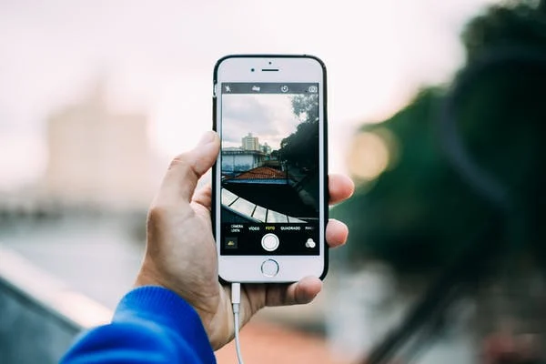
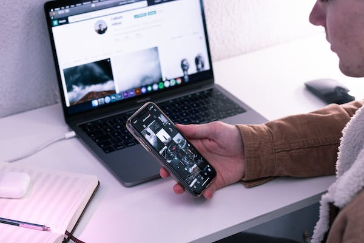
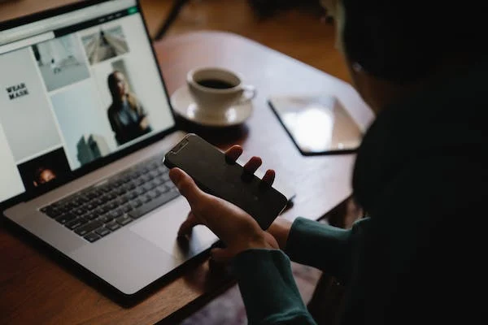

Wifi
Connect to the internet and surf, email or message during your flight.
Get Connected
We’re rolling out WiFi connectivity across our fleet. So whether you ran out of time to send that last email or want to let everyone know you’re off on holiday, buy a WiFi package and get connected during your flight.
With our onboard WiFi you'll be able to:
- Browse the Web
- Send email
- Connect through social networks
- Get the latest news




Wifi Options
There are three WiFi packages to choose from:
24-hours pass
Gives you continuous WiFi access for 24 hours. Use it during your flight when the aircraft is above 10,000 ft.
one- way pass
Allows you to use WiFi during one leg of your journey.
30-minute pass (flights over 2 hours)
Lets you to connect to the WiFi for 30 minutes from the time of purchase.
How much it costs
Visit the WiFi page of the Airtime Inflight portal to see prices for this flight. You can pay with MasterCard, Visa or American Express. Pricing options for packages vary according to a range of factors, including the route and the length of the flight.
More than just WiFi
Through the Airtime Inflight WiFi portal, you can also monitor the progress of the flight and access flydubai.com, without purchasing a WiFi package, so you can explore travel ideas, get inspired and book your next trip.